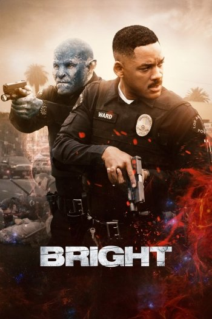

Los Ángeles está dividida en dos partes, llena de lujos para los elfos, mientras los hombres conviven con los orcos envueltos entre crímenes y pobreza. Los orcos, oprimidos, sienten un profundo rechazo hacia todo lo que amenace su condición, especialmente cuando proviene de los hombres o los elfos. En este contexto, la historia aborda la interacción entre Nick Jacoby, un policía orco, interpretado por Joel Edgerton (excelente trabajo del australiano, realmente le sienta muy bien el personaje) y Daryl Ward, un hombre policía que, en la piel de Will Smith, debe superar un conflicto que envuelve a ambos. Sobre la base de una investigación simple, a la que ambos acuden, se ven involucrados en la resolución de un caso de gran envergadura, en el que está en juego el futuro del planeta.